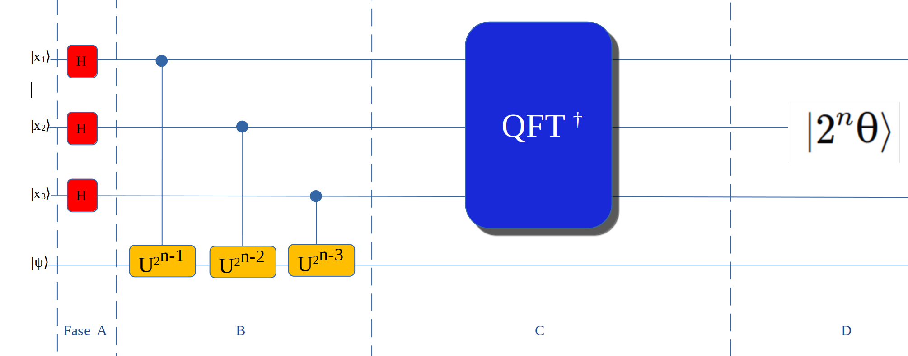
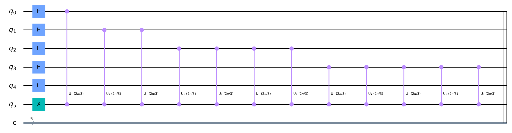
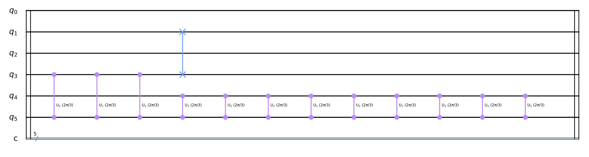
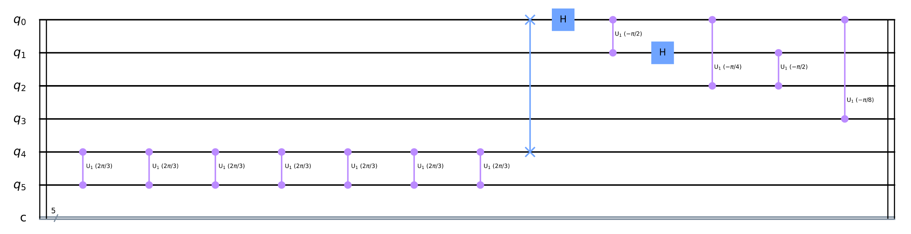
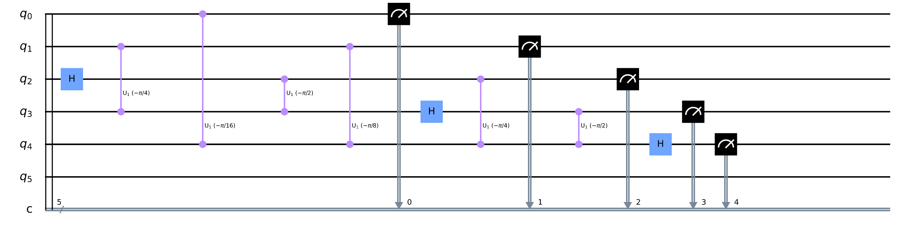
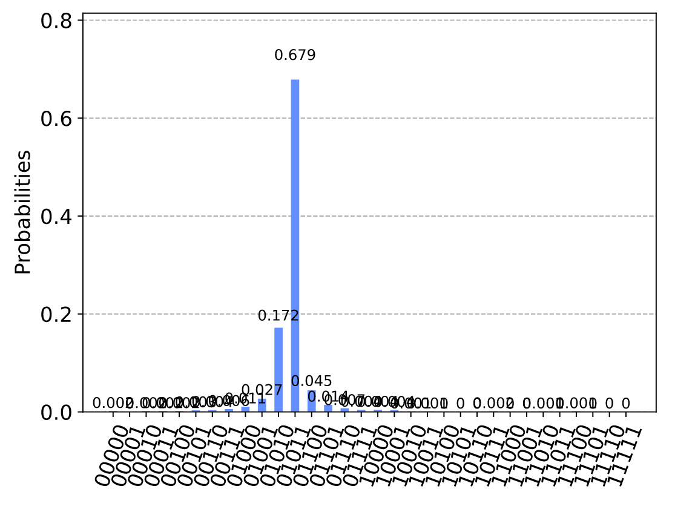

QPE Algorithm
Il Quantum Phase Estimation viene utilizzato in altri algoritmi di quantum computing.
Usa la fase kickback nella Fourier basis poi si usa la inverse QFT per cambiare lo state vector dal
Fourier basis alla computational basis.
Nel QFT si modifica lo state vector da computational basis a Fourier basis.
L'algoritmo serve a determinare θ in U|ψ⟩=`e^(2πiθ)`|ψ⟩ dove |ψ⟩ è un eigenvector e `e^(2πiθ)`
è il relativo eigenvalue.
Lo schema sottostante presenta il flusso logico per un circuito di 4 qubits con n = 3 dove nella fase A
si inseriscono in tutti i qubits tranne l'ultimo il gate Hadamard.
Nella fase B si inseriscono per ogni n
da 1 a n dei gate U.
Nella fase C si inserisce l'inverso del QFT Algorithm.
Successivamemte mella fase D si procede con la misurazione dei qubits per avere il valore di θ.
Per avere un valore più preciso bisogna utilizzare un numero maggiore di qubits.

Come vediamo dallo schema il risultato dell'algoritmo è
|ψ6⟩=`|2^nθ⟩⊗|ψ⟩` da cui deriviamo `θ = (|ψ⟩)/2^n`.
Quando troviamo il valore del computanional basis (|ψ⟩) questo diviso 2n ci fornisce il valore di θ.
Pertanto costruiamo il circuito che ci permette di trovare il valore del computational basis con 6 qubits di cui 1 isato
come ancilla bit poi calcoliamo il valore di θ.
import matplotlib.pyplot as plt
import numpy as np
import pylatexenc
from qiskit import QuantumCircuit, ClassicalRegister, QuantumRegister, execute, Aer
from qiskit.visualization import plot_histogram, plot_bloch_multivector
%config InlineBackend.figure_format = 'svg'
from qiskit.visualization import plot_histogram
nq = 6
nb = nq - 1
# Creazione circuito ( registro i bit in meno)
circuit = QuantumCircuit(nq, nb)
# Applicazione Hadamard-Gate
for n in range(nb):
circuit.h(n)
# Applicazione x-Gate
circuit.x(nb)
# controlled-U Operation
rotazione = 2*np.pi/3
ciclo = 1
for control_qubit in range(nb):
for i in range(ciclo):
circuit.cu1(rotazione, control_qubit, nb);
ciclo *= 2
#### INVERSE QFT ####
# SWAP PRIMA DEL QFP
for qubit in range(nb//2):
circuit.swap(qubit, nb-qubit-1)
for j in range(nb):
for k in range(j):
circuit.cu1(-np.pi/float(2**(j-k)), k, j)
circuit.h(j)
# MISURAZIONE
for num in range(nb):
circuit.measure(num,num)
circuit.draw(output='mpl')




backend = Aer.get_backend('qasm_simulator')
shots = 8000
results = execute(circuit, backend=backend, shots=shots).result()
risultato = results.get_counts()
plot_histogram(risultato)

Il risultato in binario è 01011 che in decimale equivale a 11 quindi |ψ⟩ = 11 e per trovare θ
nella formula `θ = (|ψ⟩)/2^n` sostituiamo |ψ⟩ con 11 e n con 5 quindi `θ = 11/2^5` = `11/32 `